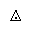

| Name | Unicode | Glyph | Unicode Name | Description | Aliases |
|---|
| ac | U+223E |  | INVERTED LAZY S | most positive | mstpos |
| acE | U+223E U+0333 |  | INVERTED LAZY S with double underline | most positive, two lines below | |
| amalg | U+2A3F |  | AMALGAMATION OR COPRODUCT | /amalg B: amalgamation or coproduct | |
| barvee | U+22BD |  | NOR | bar, vee | |
| barwed | U+2305 |  | PROJECTIVE | /barwedge B: logical and, bar above | barwedge |
| Barwed | U+2306 |  | PERSPECTIVE | /doublebarwedge B: log and, dbl bar above | doublebarwedge |
| bsolb | U+29C5 |  | SQUARED FALLING DIAGONAL SLASH | reverse solidus in square | |
| Cap | U+22D2 |  | DOUBLE INTERSECTION | /Cap /doublecap B: dbl intersection | |
| capand | U+2A44 |  | INTERSECTION WITH LOGICAL AND | intersection, and | |
| capbrcup | U+2A49 |  | INTERSECTION ABOVE BAR ABOVE UNION | intersection, bar, union | |
| capcap | U+2A4B |  | INTERSECTION BESIDE AND JOINED WITH INTERSECTION | intersection, intersection, joined | |
| capcup | U+2A47 |  | INTERSECTION ABOVE UNION | intersection above union | |
| capdot | U+2A40 |  | INTERSECTION WITH DOT | intersection, with dot | |
| caps | U+2229 U+FE00 |  | INTERSECTION with serifs | intersection, serifs | |
| ccaps | U+2A4D |  | CLOSED INTERSECTION WITH SERIFS | closed intersection, serifs | |
| ccups | U+2A4C |  | CLOSED UNION WITH SERIFS | closed union, serifs | |
| ccupssm | U+2A50 |  | CLOSED UNION WITH SERIFS AND SMASH PRODUCT | closed union, serifs, smash product | |
| coprod | U+2210 |  | N-ARY COPRODUCT | /coprod L: coproduct operator | Coproduct |
| Cup | U+22D3 |  | DOUBLE UNION | /Cup /doublecup B: dbl union | |
| cupbrcap | U+2A48 |  | UNION ABOVE BAR ABOVE INTERSECTION | union, bar, intersection | |
| cupcap | U+2A46 |  | UNION ABOVE INTERSECTION | union above intersection | |
| cupcup | U+2A4A |  | UNION BESIDE AND JOINED WITH UNION | union, union, joined | |
| cupdot | U+228D |  | MULTISET MULTIPLICATION | union, with dot | |
| cupor | U+2A45 |  | UNION WITH LOGICAL OR | union, or | |
| cups | U+222A U+FE00 |  | UNION with serifs | union, serifs | |
| cuvee | U+22CE |  | CURLY LOGICAL OR | /curlyvee B: curly logical or | curlyvee |
| cuwed | U+22CF |  | CURLY LOGICAL AND | /curlywedge B: curly logical and | curlywedge |
| dagger | U+2020 |  | DAGGER | /dagger B: dagger relation | |
| Dagger | U+2021 |  | DOUBLE DAGGER | /ddagger B: double dagger relation | ddagger |
| diam | U+22C4 |  | DIAMOND OPERATOR | /diamond B: open diamond | diamond, Diamond |
| divonx | U+22C7 |  | DIVISION TIMES | /divideontimes B: division on times | divideontimes |
| eplus | U+2A71 |  | EQUALS SIGN ABOVE PLUS SIGN | equal, plus | |
| hercon | U+22B9 |  | HERMITIAN CONJUGATE MATRIX | hermitian conjugate matrix | |
| intcal | U+22BA |  | INTERCALATE | /intercal B: intercal | intercal |
| iprod | U+2A3C |  | INTERIOR PRODUCT | /intprod | intprod |
| loplus | U+2A2D |  | PLUS SIGN IN LEFT HALF CIRCLE | plus sign in left half circle | |
| lotimes | U+2A34 |  | MULTIPLICATION SIGN IN LEFT HALF CIRCLE | multiply sign in left half circle | |
| lthree | U+22CB |  | LEFT SEMIDIRECT PRODUCT | /leftthreetimes B: | leftthreetimes |
| ltimes | U+22C9 |  | LEFT NORMAL FACTOR SEMIDIRECT PRODUCT | /ltimes B: times sign, left closed | |
| midast | U+002A |  | ASTERISK | /ast B: asterisk | ast |
| minusb | U+229F |  | SQUARED MINUS | /boxminus B: minus sign in box | boxminus |
| minusd | U+2238 |  | DOT MINUS | /dotminus B: minus sign, dot above | dotminus |
| minusdu | U+2A2A |  | MINUS SIGN WITH DOT BELOW | minus sign, dot below | |
| ncap | U+2A43 |  | INTERSECTION WITH OVERBAR | bar, intersection | |
| ncup | U+2A42 |  | UNION WITH OVERBAR | bar, union | |
| oast | U+229B |  | CIRCLED ASTERISK OPERATOR | /circledast B: asterisk in circle | circledast |
| ocir | U+229A |  | CIRCLED RING OPERATOR | /circledcirc B: small circle in circle | circledcirc |
| odash | U+229D |  | CIRCLED DASH | /circleddash B: hyphen in circle | circleddash |
| odiv | U+2A38 |  | CIRCLED DIVISION SIGN | divide in circle | |
| odot | U+2299 |  | CIRCLED DOT OPERATOR | /odot B: middle dot in circle | CircleDot |
| odsold | U+29BC |  | CIRCLED ANTICLOCKWISE-ROTATED DIVISION SIGN | dot, solidus, dot in circle | |
| ofcir | U+29BF |  | CIRCLED BULLET | filled circle in circle | |
| ogt | U+29C1 |  | CIRCLED GREATER-THAN | greater-than in circle | |
| ohbar | U+29B5 |  | CIRCLE WITH HORIZONTAL BAR | circle with horizontal bar | |
| olcir | U+29BE |  | CIRCLED WHITE BULLET | large circle in circle | |
| olt | U+29C0 |  | CIRCLED LESS-THAN | less-than in circle | |
| omid | U+29B6 |  | CIRCLED VERTICAL BAR | vertical bar in circle | |
| ominus | U+2296 |  | CIRCLED MINUS | /ominus B: minus sign in circle | CircleMinus |
| opar | U+29B7 |  | CIRCLED PARALLEL | parallel in circle | |
| operp | U+29B9 |  | CIRCLED PERPENDICULAR | perpendicular in circle | |
| oplus | U+2295 |  | CIRCLED PLUS | /oplus B: plus sign in circle | CirclePlus |
| osol | U+2298 |  | CIRCLED DIVISION SLASH | /oslash B: solidus in circle | |
| otimes | U+2297 |  | CIRCLED TIMES | /otimes B: multiply sign in circle | CircleTimes |
| Otimes | U+2A37 |  | MULTIPLICATION SIGN IN DOUBLE CIRCLE | multiply sign in double circle | |
| otimesas | U+2A36 |  | CIRCLED MULTIPLICATION SIGN WITH CIRCUMFLEX ACCENT | multiply sign in circle, circumflex accent | |
| ovbar | U+233D |  | APL FUNCTIONAL SYMBOL CIRCLE STILE | circle with vertical bar | |
| plusacir | U+2A23 |  | PLUS SIGN WITH CIRCUMFLEX ACCENT ABOVE | plus, circumflex accent above | |
| plusb | U+229E |  | SQUARED PLUS | /boxplus B: plus sign in box | boxplus |
| pluscir | U+2A22 |  | PLUS SIGN WITH SMALL CIRCLE ABOVE | plus, small circle above | |
| plusdo | U+2214 |  | DOT PLUS | /dotplus B: plus sign, dot above | dotplus |
| plusdu | U+2A25 |  | PLUS SIGN WITH DOT BELOW | plus sign, dot below | |
| pluse | U+2A72 |  | PLUS SIGN ABOVE EQUALS SIGN | plus, equals | |
| plussim | U+2A26 |  | PLUS SIGN WITH TILDE BELOW | plus, similar below | |
| plustwo | U+2A27 |  | PLUS SIGN WITH SUBSCRIPT TWO | plus, two; Nim-addition | |
| prod | U+220F |  | N-ARY PRODUCT | /prod L: product operator | Product |
| race | U+223D U+0331 |  | REVERSED TILDE with underline | reverse most positive, line below | |
| roplus | U+2A2E |  | PLUS SIGN IN RIGHT HALF CIRCLE | plus sign in right half circle | |
| rotimes | U+2A35 |  | MULTIPLICATION SIGN IN RIGHT HALF CIRCLE | multiply sign in right half circle | |
| rthree | U+22CC |  | RIGHT SEMIDIRECT PRODUCT | /rightthreetimes B: | rightthreetimes |
| rtimes | U+22CA |  | RIGHT NORMAL FACTOR SEMIDIRECT PRODUCT | /rtimes B: times sign, right closed | |
| sdot | U+22C5 |  | DOT OPERATOR | /cdot B: small middle dot | |
| sdotb | U+22A1 |  | SQUARED DOT OPERATOR | /dotsquare /boxdot B: small dot in box | dotsquare |
| setmn | U+2216 |  | SET MINUS | /setminus B: reverse solidus | setminus, Backslash, ssetmn, smallsetminus |
| simplus | U+2A24 |  | PLUS SIGN WITH TILDE ABOVE | plus, similar above | |
| smashp | U+2A33 |  | SMASH PRODUCT | smash product | |
| solb | U+29C4 |  | SQUARED RISING DIAGONAL SLASH | solidus in square | |
| sqcap | U+2293 |  | SQUARE CAP | /sqcap B: square intersection | SquareIntersection |
| sqcaps | U+2293 U+FE00 |  | SQUARE CAP with serifs | square intersection, serifs | |
| sqcup | U+2294 |  | SQUARE CUP | /sqcup B: square union | SquareUnion |
| sqcups | U+2294 U+FE00 |  | SQUARE CUP with serifs | square union, serifs | |
| ssetmn | U+2216 | | SET MINUS | /smallsetminus B: sm reverse solidus | setmn, setminus, Backslash, smallsetminus |
| sstarf | U+22C6 |  | STAR OPERATOR | /star B: small star, filled | Star |
| subdot | U+2ABD |  | SUBSET WITH DOT | subset, with dot | |
| sum | U+2211 |  | N-ARY SUMMATION | /sum L: summation operator | Sum |
| supdot | U+2ABE |  | SUPERSET WITH DOT | superset, with dot | |
| timesb | U+22A0 |  | SQUARED TIMES | /boxtimes B: multiply sign in box | boxtimes |
| timesbar | U+2A31 |  | MULTIPLICATION SIGN WITH UNDERBAR | multiply sign, bar below | |
| timesd | U+2A30 |  | MULTIPLICATION SIGN WITH DOT ABOVE | times, dot | |
| tridot | U+25EC |  | WHITE UP-POINTING TRIANGLE WITH DOT | dot in triangle | |
| triminus | U+2A3A |  | MINUS SIGN IN TRIANGLE | minus in triangle | |
| triplus | U+2A39 |  | PLUS SIGN IN TRIANGLE | plus in triangle | |
| trisb | U+29CD |  | TRIANGLE WITH SERIFS AT BOTTOM | triangle, serifs at bottom | |
| tritime | U+2A3B |  | MULTIPLICATION SIGN IN TRIANGLE | multiply in triangle | |
| uplus | U+228E |  | MULTISET UNION | /uplus B: plus sign in union | UnionPlus |
| veebar | U+22BB |  | XOR | /veebar B: logical or, bar below | |
| wedbar | U+2A5F |  | LOGICAL AND WITH UNDERBAR | wedge, bar below | |
| wreath | U+2240 |  | WREATH PRODUCT | /wr B: wreath product | VerticalTilde, wr |
| xcap | U+22C2 |  | N-ARY INTERSECTION | /bigcap L: intersection operator | Intersection, bigcap |
| xcirc | U+25EF |  | LARGE CIRCLE | /bigcirc B: large circle | bigcirc |
| xcup | U+22C3 |  | N-ARY UNION | /bigcup L: union operator | Union, bigcup |
| xdtri | U+25BD |  | WHITE DOWN-POINTING TRIANGLE | /bigtriangledown B: big dn tri, open | bigtriangledown |
| xodot | U+2A00 |  | N-ARY CIRCLED DOT OPERATOR | /bigodot L: circle dot operator | bigodot |
| xoplus | U+2A01 |  | N-ARY CIRCLED PLUS OPERATOR | /bigoplus L: circle plus operator | bigoplus |
| xotime | U+2A02 |  | N-ARY CIRCLED TIMES OPERATOR | /bigotimes L: circle times operator | bigotimes |
| xsqcup | U+2A06 |  | N-ARY SQUARE UNION OPERATOR | /bigsqcup L: square union operator | bigsqcup |
| xuplus | U+2A04 |  | N-ARY UNION OPERATOR WITH PLUS | /biguplus L: | biguplus |
| xutri | U+25B3 |  | WHITE UP-POINTING TRIANGLE | /bigtriangleup B: big up tri, open | bigtriangleup |
| xvee | U+22C1 |  | N-ARY LOGICAL OR | /bigvee L: logical or operator | Vee, bigvee |
| xwedge | U+22C0 |  | N-ARY LOGICAL AND | /bigwedge L: logical and operator | Wedge, bigwedge |